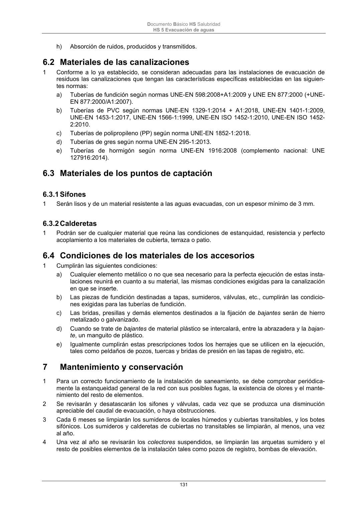

DB-HS · Mantenimiento y conservación · versión 2022-06-14 · capa oficial
Formatos: JSON compacto · Markdown · PDF fuente
Ámbito del documento · texto del ámbito · documento y tablas
ID técnico a0300 · PDF pág. 131-133 · jerarquía no validada por persona · contrastado con el literal de la página 131 (candidato tipográfico); no validado por persona · padre: a0299
Mantenimiento y conservación 1 Para un correcto funcionamiento de la instalación de saneamiento, se debe comprobar periódica- mente la estanqueidad general de la red con sus posibles fugas, la existencia de olores y el mante- nimiento del resto de elementos. 2 Se revisarán y desatascarán los sifones y válvulas, cada vez que se produzca una disminución apreciable del caudal de evacuación, o haya obstrucciones. 3 Cada 6 meses se limpiarán los sumideros de locales húmedos y cubiertas transitables, y los botes sifónicos. Los sumideros y calderetas de cubiertas no transitables se limpiarán, al menos, una vez al año. 4 Una vez al año se revisarán los colectores suspendidos, se limpiarán las arquetas sumidero y el resto de posibles elementos de la instalación tales como pozos de registro, bombas de elevación. Documento Básico HS Salubridad HS 5 Evacuación de aguas 132 5 Cada 10 años se procederá a la limpieza de arquetas de pie de bajante, de paso y sifónicas o antes si se apreciaran olores. 6 Cada 6 meses se limpiará el separador de grasas y fangos si este existiera. 7 Se mantendrá el agua permanentemente en los sumideros, botes sifónicos y sifones individuales para evitar malos olores, así como se limpiarán los de terrazas y cubiertas. Documento Básico HS Salubridad HS 5 Evacuación de aguas 133

PDF fuente redistribuible: copia fiel enlazada en esta página (SHA256 verificado).